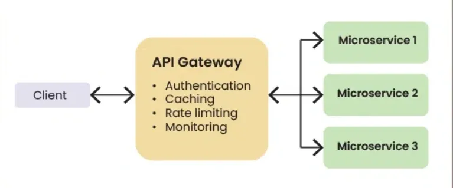

What is API Gateway?
An API Gateway is a key component in system design, particularly in microservices architectures and modern web applications.
It serves as a centralized entry point for managing and routing requests from clients to the appropriate microservices or
backend services within a system.
API-Gateway

An API Gateway serves as a reverse proxy between clients and backend services.
After receiving incoming client requests, it manages a number of responsibilities, including rate limitation,
routing,
and authentication, before forwarding the requests to the appropriate backend services.
Offers a consistent interface and hiding the complexity of the underlying architecture
Working of API Gateway
In the above diagram:
- User will send the request from mobile or web application.
- API Gateway will determine which request is coming.
-
Authentication means the user need to proof there identity to the server or client,
by providing there User_Id and Password. For example: Login or Signup page.
-
SSL full form Secure Socket Layer, it is used to establish an encrypted link between a server and a client.
-
It provides the ability to perform protocol translation, where incoming requests are translated from one channel to another.
-
When requests are aggregated, a request received by an API gateway will trigger requests to different endpoints,
and return response to the client.
The primary purpose of an API Gateway is to simplify the client's interaction with the underlying services,
enhance security, and provide various features for managing and monitoring API traffic.
How does API Gateway work?
Let us see how API Gateway works:
- Routing – Directs client requests to the appropriate service based on URL, method, or headers.
- Protocol Translation – Converts requests between protocols (e.g., HTTP → gRPC/WebSocket).
- Request Aggregation – Combines multiple backend calls into one to reduce round trips.
- Authentication & Authorization – Verifies client identity and access permissions.
- Rate Limiting & Throttling – Controls request rates to prevent abuse and ensure resource balance.
- Load Balancing – Distributes requests across service instances for scalability and availability.
- Caching – Stores backend responses to speed up repeated requests.
- Monitoring & Logging – Tracks metrics and logs for performance and usage insights.
How differently API Gateway works with Microservices and Monolith Architecture?
The way an API Gateway works with microservices differs from how it works with a monolithic architecture in several key aspects:
Aspect
Monolithic Architecture
Microservices Architecture
Request routing
In a monolithic architecture, the API Gateway typically routes requests to different parts of the monolith
based on the request URL or other criteria
In a microservices architecture, the API Gateway routes requests to different microservices
based on the request URL or other criteria, acting as a kind of "front door" to the microservices ecosystem.
Service discovery
In a monolithic architecture, service discovery is not typically a concern,
as all parts of the application are contained within the same codebase.
In a microservices architecture, the API Gateway may need to use service discovery mechanisms
to dynamically locate and route requests to the appropriate microservices.
Authentication and authorization
In both architectures, the API Gateway can handle authentication and authorization.
However, in a microservices architecture, there may be more complex authorization scenarios,
as requests may need to be authorized by multiple microservices.
Load balancing
In both architectures, the API Gateway can perform load balancing.
However, in a microservices architecture, load balancing may be more complex,
as requests may need to be load balanced across multiple instances of multiple microservices.
Fault tolerance
In both architectures, the API Gateway can provide fault tolerance by retrying failed requests
and routing requests to healthy instances of services.
However, fault tolerance may be more critical in a microservices architecture,
where the failure of a single microservice should not bring down the entire system.
API Gateway with Microservices Example
Example Scenario:
Let's consider a hypothetical e-commerce system with microservices.
The system has services for user management, product catalog, shopping cart, and order processing.
Clients interact with the system through a web application.
API-Gateway-with-Microservices
Explanation of the above diagram
- The web application communicates with the API Gateway.
-
The API Gateway routes requests to the appropriate microservices
(e.g., user-related requests to the Users service).
- It handles authentication, rate limiting, caching, and other functions.
- Error responses are also standardized by the API Gateway.
API Gateway with Monolith Example
Example Scenario:
Consider a traditional e-commerce monolithic application.
The API Gateway can still serve as a central entry point and manage authentication,
request transformation, caching, and other features.
API-Gateway-with-Monolith
Explanation of the above the diagram
- The web application communicates with the API Gateway.
- The API Gateway simplifies client interactions and provides security and caching and other features.
- It also manages API versioning and error handling.
Best practices for implementing API Gateway
Below are the best practices for API Gateway:
-
Security: To prevent abuse, utilize SSL/TLS for encryption,
implement strong authentication and authorization methods,
and use IP whitelisting and rate limiting.
-
Performance Optimization: Reduce latency and speed up response times
by utilizing caching, request/response compression, and effective routing.
-
Scalability: Design for horizontal scalability, use load balancing,
and monitor performance metrics to scale resources as needed.
-
Monitoring and Logging: Use monitoring tools to track performance indicators,
interface with logging and monitoring systems for centralized management,
and implement extensive logging.
-
Error Handling: Implement robust error handling mechanisms
and use standardized error codes and messages for consistency.
-
Versioning and Documentation: Maintain backward compatibility
and manage changes with versioning.
Also, keep documentation updated so developers can learn how to use the API.
Benefits of using an API Gateway
- Centralized Entry Point – Clients interact with a single gateway to access multiple microservices.
- Routing & Load Balancing – Directs requests to the appropriate service and distributes load across instances.
- Authentication & Authorization – Verifies identity and enforces access control using JWTs, OAuth, or API keys.
- Request & Response Transformation – Converts data formats (e.g., JSON ↔ XML) for compatibility between services.
Challenges of using an API Gateway
API Gateways can introduce several challenges, especially in complex environments or when not properly configured.
Some common challenges include:
-
Performance bottlenecks: When managing a high volume of requests,
API gateways may become a performance bottleneck or a single point of failure.
To make sure they can support the load, careful configuration and design are needed.
-
Increased latency: Requests may experience increased latency if an API gateway is introduced,
particularly if complicated routing, authentication, or other processes must be carried out.
This problem can be reduced by using caching and optimizing the Gateway's configuration.
-
Complexity: Managing and configuring an API Gateway can be complex,
especially in environments with a large number of services and endpoints.
Proper documentation and automation tools can help reduce this complexity.
-
Security risks: Security flaws including incorrect permission, authentication,
or the disclosure of private data can be brought about by improperly designed API gateways.
To reduce these threats, regular security assessments and updates are crucial.
-
Scalability challenges: It can be difficult to scale an API gateway,
particularly in dynamic environments with varying demand.
To guarantee scalability, load balancing and horizontal scaling techniques are important.
Popular API Gateway Solution
Below are some API Gateway Solution:
1. Amazon API Gateway
It is a fully managed service that makes it easy for developers to create,
publish, maintain, monitor, and secure APIs at any scale.
It supports RESTful APIs as well as WebSocket APIs for real-time communication.
2. Apigee
It now part of Google Cloud, is a platform that enables organizations to design,
secure, deploy, monitor, and scale APIs.
It offers features like API analytics, API monetization, and developer portal management.
3. Kong
It is an open-source API Gateway and microservices management layer.
It is built on top of Nginx and provides features like request routing,
authentication, rate limiting, and logging.
4. Microsoft Azure API Management
It is a fully managed service that helps organizations publish, secure, and manage APIs.
It offers features like API gateway functionality, developer portal management, and API versioning.
5. Apache APISIX
Apache APISIX is a top-level project of the Apache Software Foundation,
with 15K+ stars on GitHub and over 460 contributors.
Known for its high performance, cloud-native architecture,
and rich plugin ecosystem, APISIX has become one of the leading API gateways.
WebSocket
A WebSocket API in API Gateway is a collection of WebSocket routes that are integrated with backend HTTP endpoints,
Lambda functions, or other AWS services. You can use API Gateway features to help you with all aspects of the API lifecycle,
from creation through monitoring your production APIs.
API Gateway WebSocket APIs are bidirectional. A client can send messages to a service, and services can independently send messages
to clients. This bidirectional behavior enables richer client/service interactions because services can push data to clients without
requiring clients to make an explicit request. WebSocket APIs are often used in real-time applications such as chat applications,
collaboration platforms, multiplayer games, and financial trading platforms.
API Gateway REST APIs
A REST API in API Gateway is a collection of resources and methods that are integrated with backend HTTP endpoints, Lambda functions,
or other AWS services. You can use API Gateway features to help you with all aspects of the API lifecycle, from creation through monitoring your production APIs.
API Gateway REST APIs use a request/response model where a client sends a request to a service and the service responds back synchronously.
This kind of model is suitable for many different kinds of applications that depend on synchronous communication
EC2 Instance Types vs Docker Container Capacity
Note: The container counts are approximate values assuming Linux OS,
lightweight containers, and proper CPU & memory limits.
General Purpose Instances
| Instance Type |
vCPU |
RAM |
Approx Containers |
| t2.micro |
1 |
1 GB |
5 – 8 |
| t2.small |
1 |
2 GB |
10 – 15 |
| t2.medium |
2 |
4 GB |
20 – 30 |
| t3.micro |
2 |
1 GB |
8 – 12 |
| t3.small |
2 |
2 GB |
15 – 25 |
| t3.medium |
2 |
4 GB |
25 – 40 |
| t3.large |
2 |
8 GB |
50 – 80 |
Compute Optimized Instances
| Instance Type |
vCPU |
RAM |
Approx Containers |
| c5.large |
2 |
4 GB |
25 – 35 |
| c5.xlarge |
4 |
8 GB |
50 – 80 |
| c5.2xlarge |
8 |
16 GB |
100 – 150 |
Memory Optimized Instances
| Instance Type |
vCPU |
RAM |
Approx Containers |
| r5.large |
2 |
16 GB |
60 – 90 |
| r5.xlarge |
4 |
32 GB |
120 – 180 |
| r5.2xlarge |
8 |
64 GB |
250 – 350 |
Container Type Impact
| Container Type |
Average Memory |
Container Count Impact |
| Nginx / Alpine |
~50 MB |
High |
| Node / Python |
~150 MB |
Medium |
| Java / Spring Boot |
500 MB – 1 GB |
Low |
| MySQL / MongoDB |
1 – 2 GB |
Very Low |
Best Practice Formula
Available RAM / Avg Container RAM = Max Containers
Example:
8 GB / 200 MB ≈ 40 containers